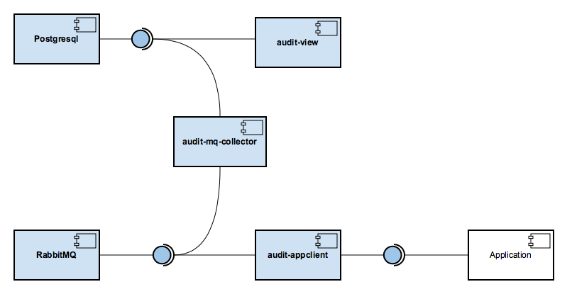
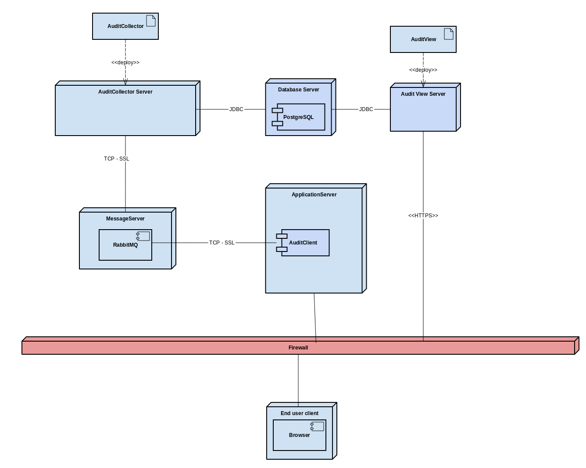

Architecture
Each component play a role in the architecture represented by Figure 1:

Let's start by talking about what an application need to do to be audited.
A application need's to do only one thing: Publish AuditEvents
Suppose you want to audit every login and logout to a system. The login event is the event you need to catch in your application and publish in the message bus
The message you publish is a standard message modeled by the AuditEvent class in the audit-model component. The audit-model component just creates a standard data transfer object class to be published, consumed and stored by the system. The message need to be in JSON format, you can serialize the AuditEvent class, but if you use the audit-appclient-framework, it abstract that for you and try to provide a API for communication that is aware of you framework. Current, only spring framework is supported.
But you don't need to use audit-model or audit-appclient-whatever, in your application, you just need to publish a standard json object to the bus
How is the AuditEvent object?
| Field | Description |
|---|---|
| id | The id is auto generated by the storage |
| applicationName | A identification of the application. You should take care that each application must have a unique applicationName across the others |
| userName | Who make the action? Normally the user name of the current login in user |
| action | What happen? The action must identify what happen in the event, it should be a verb, it should be standardized, after all someone will search for that |
| resource.resouceType | The resource represents, what or who has been affected by the action. Resource type is the class of resources. Example: person |
| resource.resourceId | The resource id represents the unity that has been affected by the action. Example: 123 Multiple values uses ; to separate. Example 123;456 |
| dateTime | When the event was generated. |
| ip | The ip address of the client machine for the user that generate the event. |
| securityLevel | A way to classify the severity of the event. Only supports 3 values: LOW, NORMAL, HIGHT |
| description | A optional description of the event, or could be used for other information |
With that object you can interpret a AuditEvent as this (order of the table above)
SGL - fooUser - ldap_enable - person - 123 - Sat May 21 08:14:59 - 10.0.1.1 - NORMAL -
That line means user fooUser in the application SGL has enable in ldap the person 123 on Sat May 21 08:14:59, the user was in the machine 10.0.1.1 and this is a normal operation
Is crucial that the actions should be standardized and the resources too. Some actions are common across every applications, some makes sense only for a particular app.
The underline should be used to separate the concerns. In the exemplo above ldap_enable separates the actual action enable for a more specific action ldap. That means the user has enable in some ldap respository, not that the user has enabled in the application itself.
Other examples:
- database_insert - An insert in the database
- database_update - An update in the database
- database_delete - A delete in the database
- database_select - A select in the database
- database_insert_or_update - A insert or update operation in database
- user_login - The user has login
- user_logout - The user has logout
- user_enable - The user has been enabled
- ldap_create - The ldap object has been created
- ldap_read - The ldap object has been readed
- ldap_change_password - The ldap password of the object has been changed
If a action is specific for the application, use the name of application as a prefix. Example sgl_reset_password
The audit-model component lib has some common actions.
Enough information in one event, don't you think? The objective of a audit system, is to identify who does what and when. That event can create a good representation of that. If you don't agree, let me know. Is entire possible to persist non standardize json objects in the future.
What is the bus? The RabbitMQ component is a robust and easy to use message queue, that is the bus I'm talking about. Current is the only supported message queue, but probally you don't need other.
Ok. Get a standard message in JSON that represents an audit event, and publish on the message queue, easy right? What happens next?
The next component takes the action now. The audit-mq-collector is a message queue collector that only knows how to get a message in the queue and store it :-)
That is it, audit-mq-collector takes a message in the queue and store in the database. Current it only talks with a postgresql database, and stores in a single table for good performance
If the system grow's, you could need a cluster of postgresql databases, or you could create a cluster of the nosql of your choise for insane performance or you could even add a new audit-mq-collector that talks to another database and replicates to a master view. In that case, you need to change only this component, and the audit-view
What is the audit-view?
Is just a nice look view of the database, where people can search for events. You can do that with the standard tools of the database. The advantages of the audit-view are:
- Better for non tecnical users
- Authenticates with JBoss Keycloak Server
- Is a simple web app
Now that you know the basics, lets talk about some challends and fun:
- Do everything async: The queue is not only to publish the events, is to make the system performant and scalable. For that goal every application that publish the events, need to do that in a async way.
- Use Aspect Oriented Programming: To catch the events, aspect oriented programming is the best way. The audit-appclient-spring component will do that. We have some challends here, sometimes it will need developer logic or annotations to represent the AuditEvent better. I'm investigating on this, check the audit-appclient-spring for more details
Deployment
It could be implanted like in the Figure 2:
